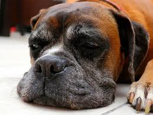
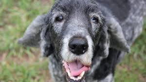
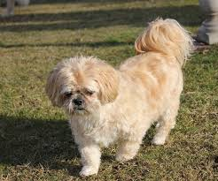
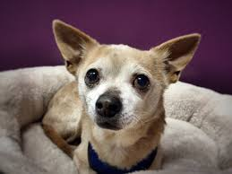
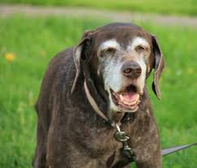

Meet your new old friend!
-

Captain
Captain is a 12yr old boxer from Maine, thought to be from a condemned shipping yard.He loves long naps on the beach.
-
Arlo
Arlo, a 9yr old golden was a surrender to us after he incountered bladder problems on his 10th birthday.If you can deal with his "excitement" piddles, he promisses to be a very good boy.
-

Vinny
Vinny was found behind and old art studio, thus his more formal name "Vincent". This 13yr old mixed breed pooch has a taste for the finer things in life.
-

Candy
Candy is as sweet as his namesake, our senior most dog at 16yrs, this delightful old man has plenty enough love left to give.
-

Pico
Pico is our 11yr old Chihuaua mix who still has a lot of spunk left in her.She needs someone who can live up to her high luxury lifestyle and can keep her warm through the winter months.
-

Nana
Nana is our "mother hen" at Happy Tails.She's a 14yr old chocolate lab who has a soft spot for children and youngsters in general. She needs a family environment to make her new home.
-
George
George is a 12yr old spaniel mix.He is a simple fellow who loves nothing more than to nap next to the radio, his hearing isn't what it used to be but he likes the vibrations.If you need a jam bud that doesn't have a preferance,then George is your best bet.